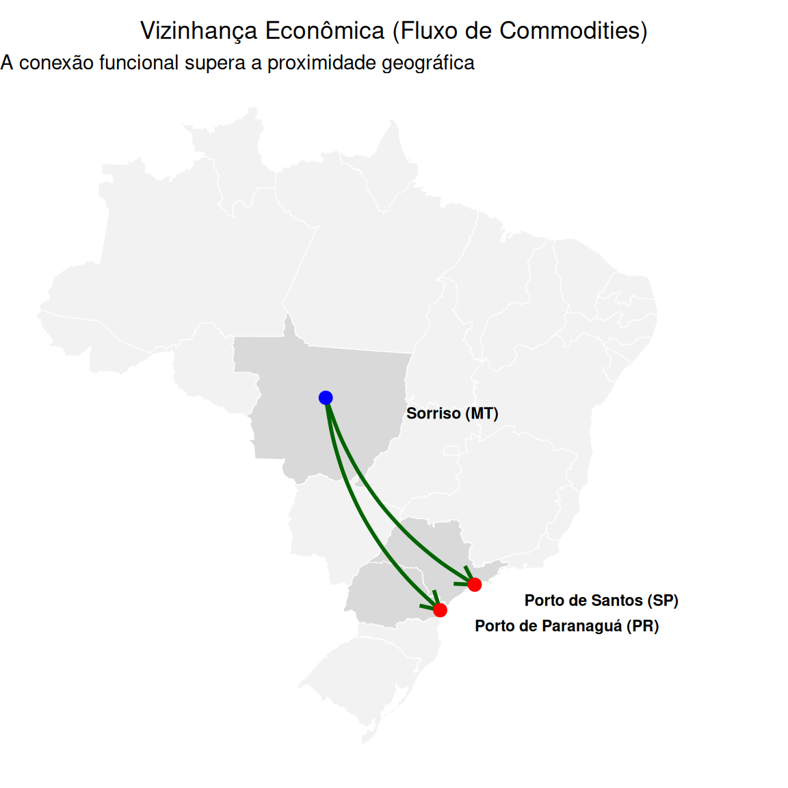
Aula 04: Teoria e Prática em R
Instituto de Matemática, Estatística e Ciência da Computação (IME‑USP)
27/01/2026
\(\Longrightarrow\) Domínio Discreto (\(D^L\)) vs. Contínuo (\(D^G\))
Def.: Processos estocásticos onde o domínio espacial é fixo, discreto e contável (Cressie; Moores, 2022).
Unidades: Observações ancoradas em unidades espaciais predefinidas e não sobrepostas (ex: municípios, pixels, zonas censitárias).
Incerteza: Reside no atributo \(Y(\mathbf{s}_i)\), pois a localização \(\mathbf{s}_i\) é fixa.
Vetor de observações: \(\mathbf{y} = (y_1, \dots, y_n)^\top\).
Dependência: Governada pela topologia/vizinhança, não necessariamente pela distância euclidiana contínua (Besag, 1974).
\(\Longrightarrow\) Quantificando a conexão espacial
\[ \mathbf{W}_{n \times n} = \begin{bmatrix} w_{11} & w_{12} & \cdots & w_{1n} \\ w_{21} & w_{22} & \cdots & w_{2n} \\ \vdots & \vdots & \ddots & \vdots \\ w_{n1} & w_{n2} & \cdots & w_{nn} \end{bmatrix} \]
\(w_{ij}\): Conexão entre \(j\) e \(i\).
Convenção: \(w_{ii} = 0\) (sem auto-conexão) (Anselin, 2001).
Feedback Espacial: Diferente de séries temporais, a dependência é multidirecional (\(i \leftrightarrow j \leftrightarrow k\)).
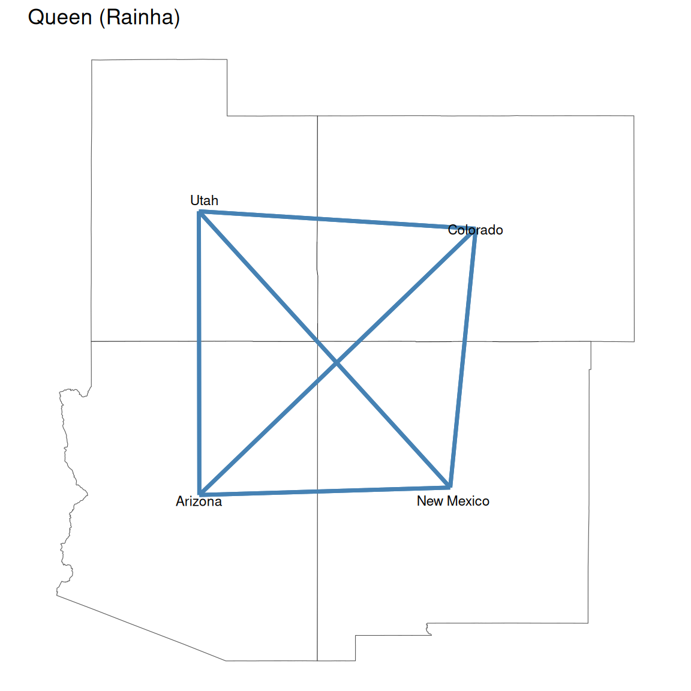
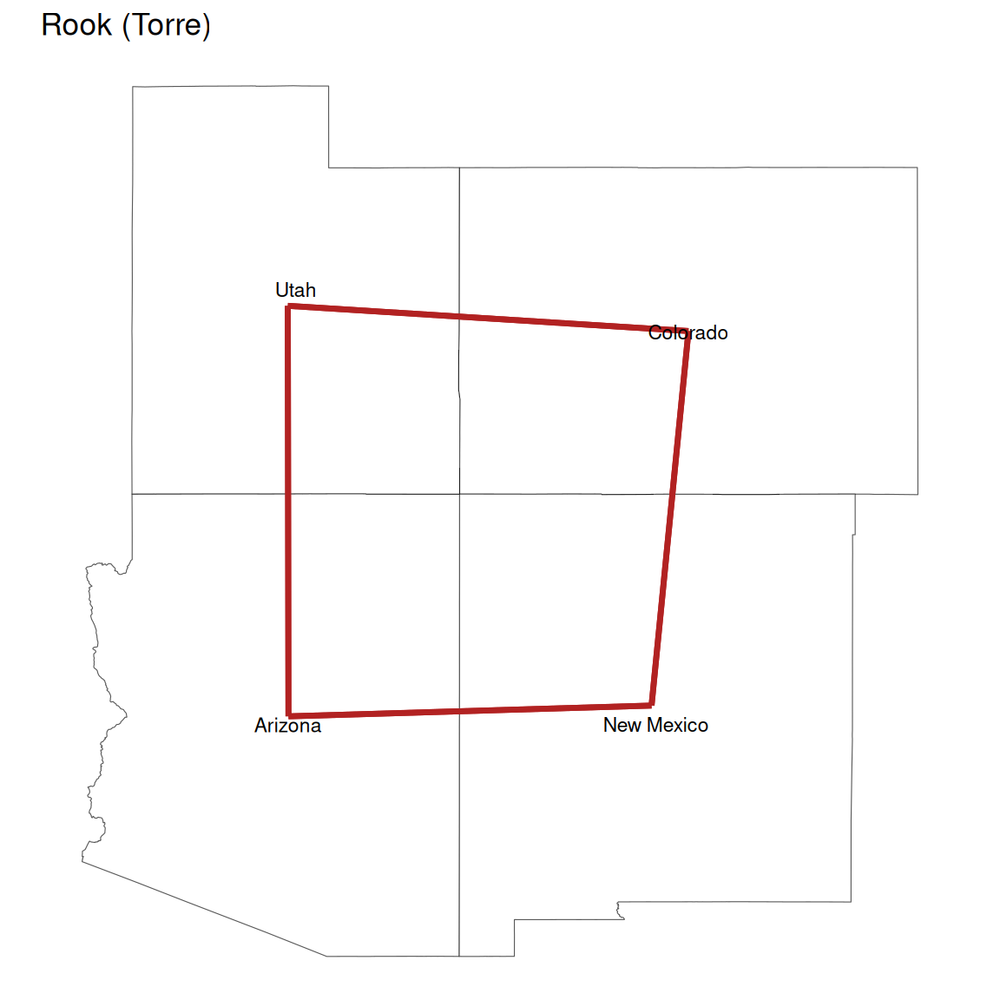
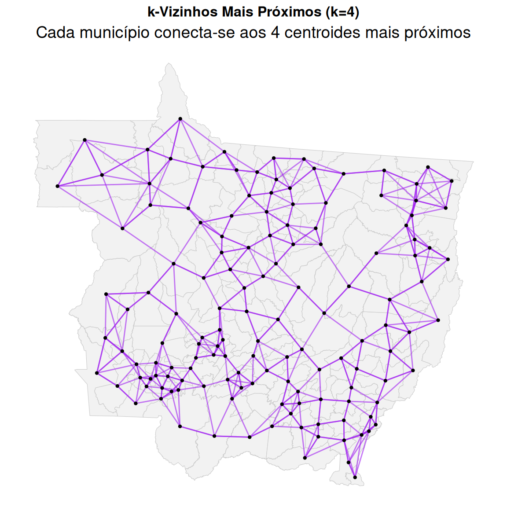
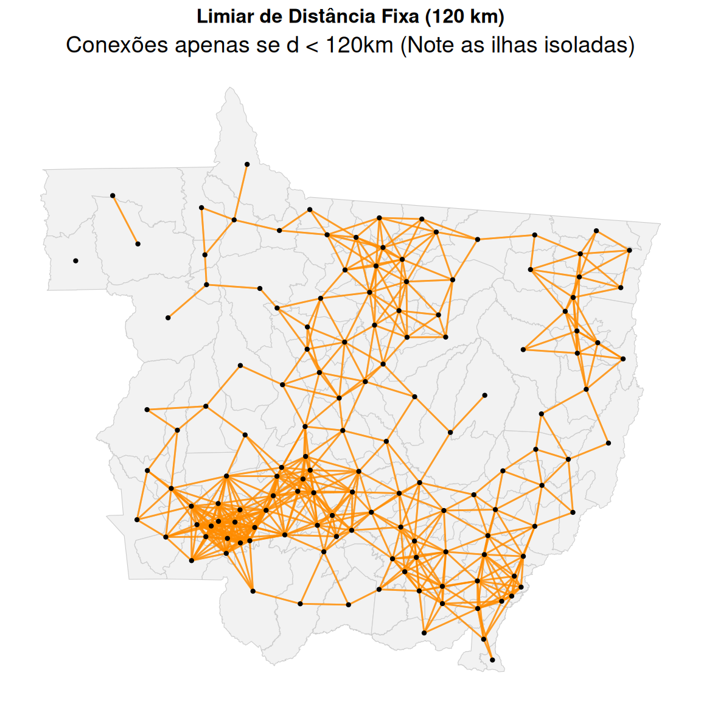
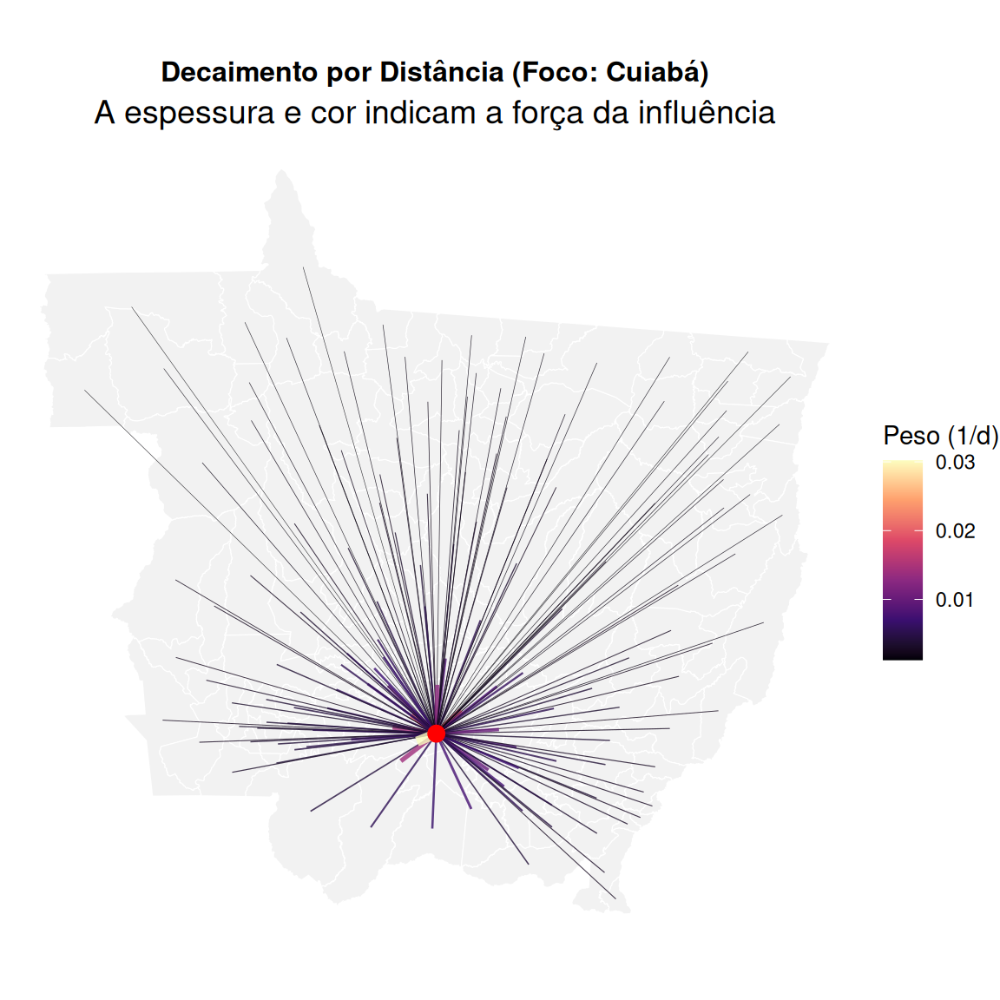

Nota: Relaia o conteúdo da aula 01, parte de vizinhança
\(\Longrightarrow\) Por que transformar a matriz binária?
A matriz \(\mathbf{W}\) binária (0 ou 1) reflete apenas a existência de conexão.
A escolha dos pesos deve ser teórica e definida a priori (Kelejian; Piras, 2017).
Em modelos espaciais, a matriz \(( \mathbf{I} - \rho \mathbf{W} )\) precisa ser invertível.
Sem normalização, autovalores (\(\lambda\)) explodem, dificultando a estimação de \(\rho\) e a interpretação numérica.
\[w_{ij}^{r} = \frac{w_{ij}}{\sum_{j=1}^n w_{ij}}\]
\[ \small \mathbf{W} = \begin{bmatrix} 0 & 1 & 1 \\ 1 & 0 & 0 \\ 1 & 0 & 0 \end{bmatrix} \rightarrow \mathbf{W}^{r} = \begin{bmatrix} 0 & 0.5 & 0.5 \\ 1 & 0 & 0 \\ 1 & 0 & 0 \end{bmatrix} \]
\[w_{ij}^{c} = \frac{w_{ij}}{\sum_{i=1}^n w_{ij}}\]
\[ \small \mathbf{W} = \begin{bmatrix} 0 & 1 & 1 \\ 1 & 0 & 0 \\ 1 & 0 & 0 \end{bmatrix} \rightarrow \mathbf{W}^{c} = \begin{bmatrix} 0 & 1 & 1 \\ 0.5 & 0 & 0 \\ 0.5 & 0 & 0 \end{bmatrix} \]
\[\mathbf{W}^{spectral} = \frac{\mathbf{W}^0}{\lambda_{max}}\]
Segundo Anselin (1995), é um conjunto de técnicas para:
Descrever e visualizar distribuições espaciais.
Identificar atípicos (spatial outliers).
Detectar padrões de associação (clusters).
Sugerir regimes de heterogeneidade espacial.
O objetivo é quantificar a dependência definida por \(\mathbf{W}\).
\(\Longrightarrow\) Da correlação à autocorrelação
\(\Longrightarrow\) Associação linear entre duas variáveis distintas (\(X\) e \(Y\)).
\[ r = \frac{\text{Cov}(X, Y)}{\sigma_X \sigma_Y} = \frac{\sum_{i=1}^n (x_i - \bar{x})(y_i - \bar{y})}{\sqrt{\sum (x_i - \bar{x})^2} \sqrt{\sum (y_i - \bar{y})^2}} \]
Como \(X\) varia em relação a \(Y\) na mesma unidade \(i\).
Assume-se que os pares \((x_i, y_i)\) são independentes entre si (i.i.d).
\(\Longrightarrow\) Associação linear de uma variável (\(Y\)) com ela mesma no espaço.
Na estatística espacial, não temos um \(X\) e um \(Y\) distintos. Temos apenas \(Y\) em locais diferentes.
Para medir a correlação de \(Y\) consigo mesma, substituímos a segunda variável (\(X\)) pela média ponderada dos vizinhos (Defasagem Espacial ou Spatial Lag).
\[ \text{Pearson: } \sum (x_i - \bar{x})(y_i - \bar{y}) \quad \xrightarrow{\text{Espacial}} \quad \text{Moran: } \sum_{i} \sum_{j} w_{ij} (y_i - \bar{y})(y_j - \bar{y}) \]
Significa “si mesmo”.
É a correlação da variável \(Y_i\) com a variável \(Y_j\) (onde \(j\) são os vizinhos de \(i\) definidos pela matriz \(\mathbf{W}\)).
Se o valor em \(i\) é alto e a média dos vizinhos \(j\) também é alta, temos autocorrelação positiva.
\[ I = \frac{n}{\sum_{i=1}^n \sum_{j=1}^n w_{ij}} \cdot \frac{\sum_{i=1}^n \sum_{j=1}^n w_{ij} (y_i - \bar{y})(y_j - \bar{y})}{\sum_{i=1}^n (y_i - \bar{y})^2}, \: \: \mathbf{W} = [w_{ij}]_{n\times n} \]
Interpretação
\(I > E[I], E[I]= -1/(n-1)\): Autocorrelação Positiva (agrupamento).
\(I < E[I]\): Autocorrelação Negativa (dispersão/xadrez).
\(I \approx E[I]\): Aleatoriedade.
Moran I test under randomisation
data: mg_sf$indicador
weights: lw
Moran I statistic standard deviate = 29.13, p-value < 2.2e-16
alternative hypothesis: greater
sample estimates:
Moran I statistic Expectation Variance
0.6193722870 -0.0011737089 0.0004537973
Monte-Carlo simulation of Moran I
data: mg_sf$indicador
weights: lw
number of simulations + 1: 1000
statistic = 0.61937, observed rank = 1000, p-value = 0.001
alternative hypothesis: greaterFoca na dissimilaridade quadrática entre vizinhos (similar ao variograma).
\[ c = \frac{(n-1)}{2 \sum_{i=1}^n \sum_{j=1}^n w_{ij}} \cdot \frac{\sum_{i=1}^n \sum_{j=1}^n w_{ij} (y_i - y_j)^2}{\sum_{i=1}^n (y_i - \bar{y})^2} \]
Interpretação
\(0 < c < 1\): Autocorrelação Positiva (vizinhos similares).
\(c > 1\): Autocorrelação Negativa (vizinhos dissimilares).
\(c = 1\): Aleatoriedade.
Geary C test under randomisation
data: mg_sf$indicador
weights: lw
Geary C statistic standard deviate = 26.149, p-value < 2.2e-16
alternative hypothesis: Expectation greater than statistic
sample estimates:
Geary C statistic Expectation Variance
0.377124962 1.000000000 0.000567393
Monte-Carlo simulation of Geary C
data: mg_sf$indicador
weights: lw
number of simulations + 1: 1000
statistic = 0.37712, observed rank = 1, p-value = 0.001
alternative hypothesis: greater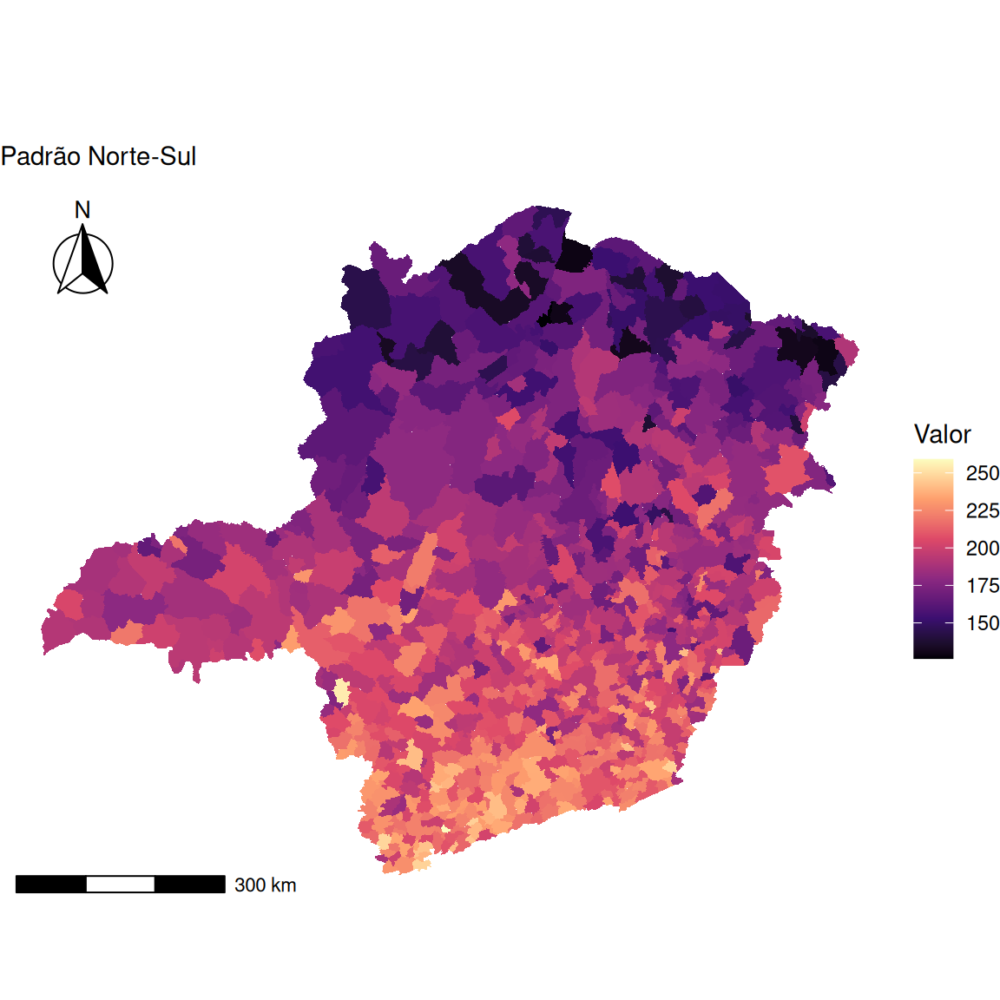
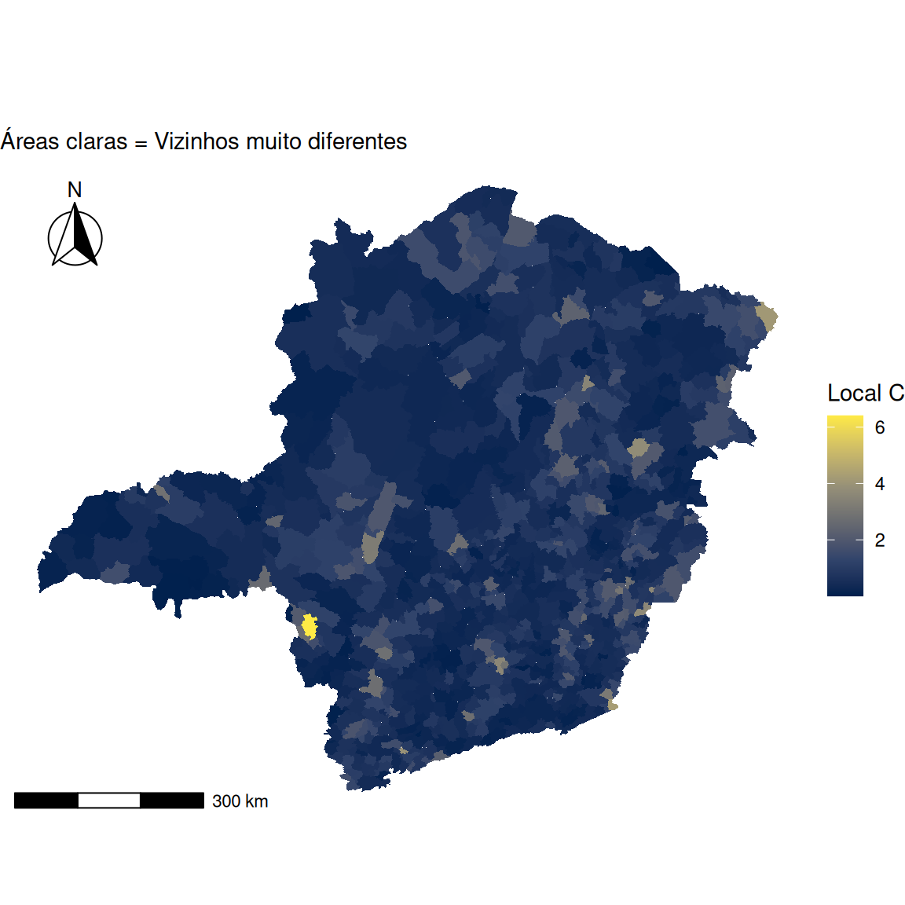
\(\Longrightarrow\) Local Indicators of Spatial Association (LISA)
A dependência espacial raramente é estacionária (igual em todo o mapa). Segundo Anselin (1995), os indicadores locais (\(I_i\)) devem satisfazer duas propriedades:
Avaliar se o padrão em torno da unidade \(i\) é aleatório ou estruturado.
A soma dos indicadores locais é proporcional à estatística global (\(\sum_i I_i \propto I\)).
Avalia a correlação entre o valor local (\(s_i\)) e a média dos vizinhos (\(Ws_i\)).
\[ I_i = \frac{(y_i - \bar{y})}{S^2} \cdot \sum_{j=1}^n w_{ij} (y_j - \bar{y}) \]
Onde \(S^2\) é a variância amostral.
\(\Longrightarrow\) O que o \(I_i\) de Moran pode mostrar ?
Alto-Alto (High-High | HH):
Baixo-Baixo (Low-Low | LL)
Alto-Baixo (High-Low | HL):
Baixo-Alto (Low-High | LH):
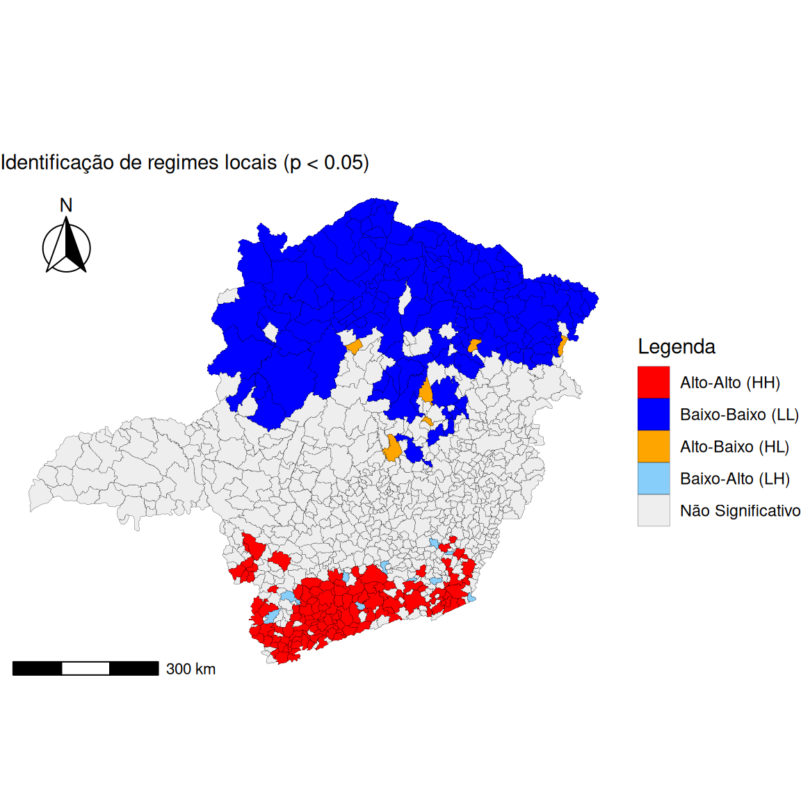
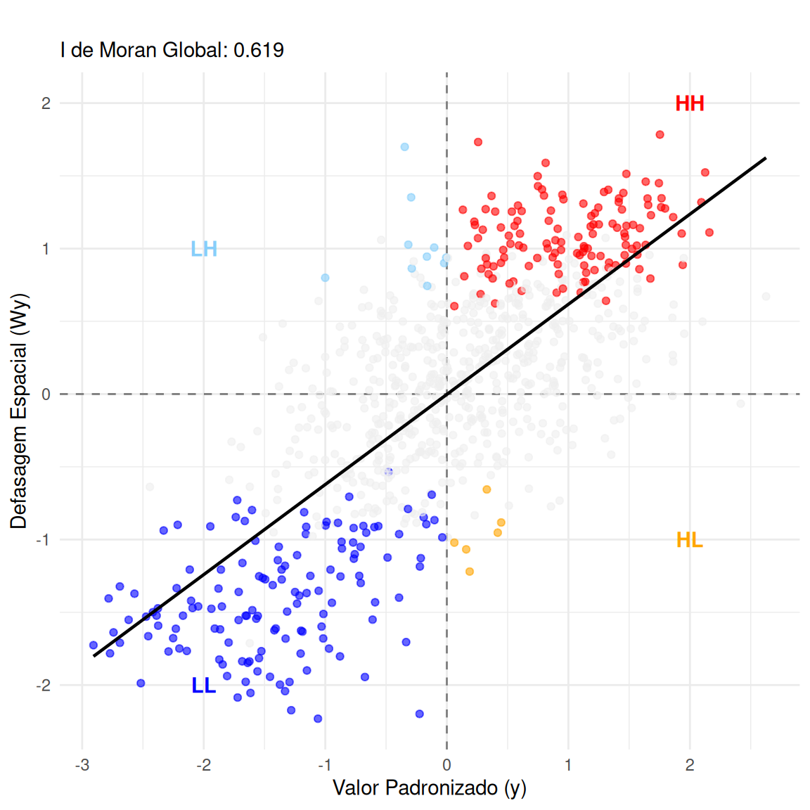
\[G_i^* = \frac{\sum_{j=1}^n w_{ij} y_j}{\sum_{j=1}^n y_j}\]
\(G_i\): Exclui a unidade \(i\).
\(G_i^*\): Inclui a unidade \(i\) (mais comum).
Diferença: Moran local distingue clusters de outliers. Getis-Ord identifica apenas Hot Spots e Cold Spots.
A estatística retorna um valor Z padronizado:
\(Z(G_i^*) > 1.96\): Hot Spot (Agrupamento significativo de valores altos).
\(Z(G_i^*) < -1.96\): Cold Spot (Agrupamento significativo de valores baixos).
Entre: Aleatoriedade espacial.
\(\Longrightarrow\) O desafio dos dados brutos
Para dados de contagem \(O_i\) com população em risco \(P_i\), a taxa bruta é \(r_i = O_i / P_i\).
Em epidemiologia, usa-se a Razão de Mortalidade Padronizada (SMR):
\[ \text{SMR}_i = \frac{O_i}{E_i} \quad \text{onde} \quad E_i = P_i \cdot \bar{r} \]
Em áreas com \(P_i\) pequena, a variância é altíssima (Cressie; Chan, 1989).
Um único caso adicional em uma cidade pequena pode duplicar a taxa, criando outliers espúrios.
O mapa é dominado por áreas despovoadas com taxas extremas (mas pouco confiáveis).
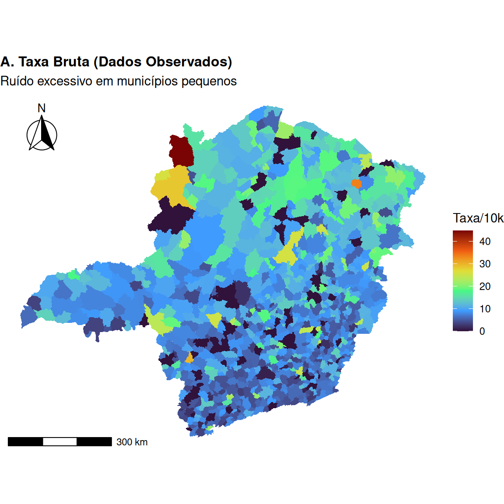
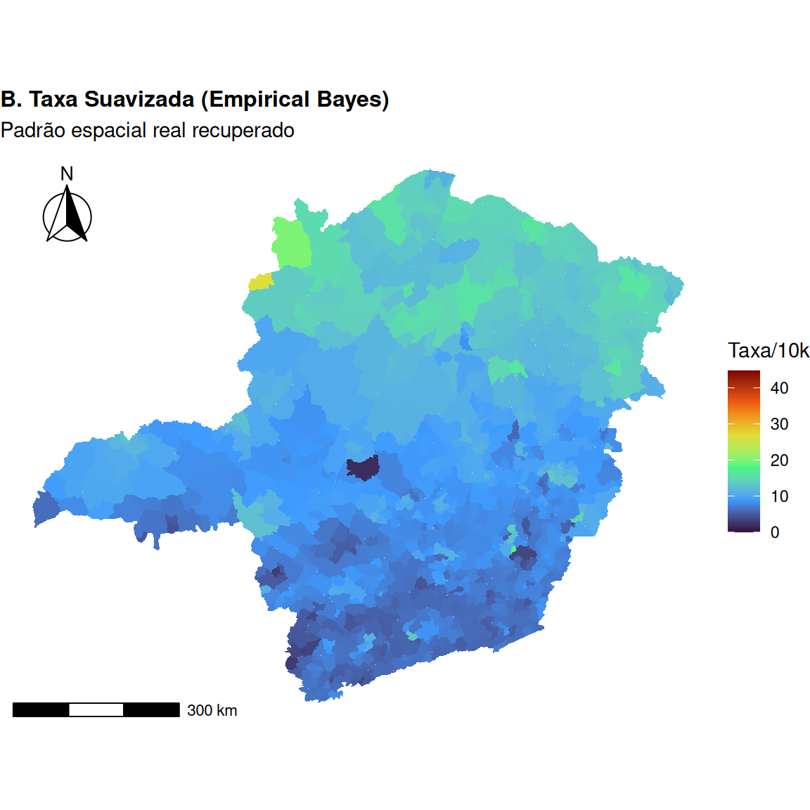
\(\Longrightarrow\) Por que analisar os resíduos?
Roteiro de Diagnóstico (Anselin (2001))
\[\mathbf{y} = \mathbf{X}\boldsymbol{\beta} + \boldsymbol{\varepsilon}, \quad \boldsymbol{\varepsilon} \sim N(\mathbf{0}, \sigma^2 \mathbf{I})\] 2. Calcular os resíduos \(\hat{\boldsymbol{\varepsilon}} = \mathbf{y} - \mathbf{X}\hat{\boldsymbol{\beta}}\).
Nota: Se \(I(\hat{\boldsymbol{\varepsilon}})\) for significativo, o pressuposto de independência é violado. Porém, a escolha incorreta de \(\mathbf{W}\) pode levar a diagnósticos falsos (Zhang; Yu, 2018).
Global Moran I for regression residuals
data:
model: lm(formula = taxa_bruta ~ variavel_x, data = mg_dados)
weights: lw
Moran I statistic standard deviate = 9.3389, p-value < 2.2e-16
alternative hypothesis: two.sided
sample estimates:
Observed Moran I Expectation Variance
0.1977385849 -0.0011812437 0.0004536919 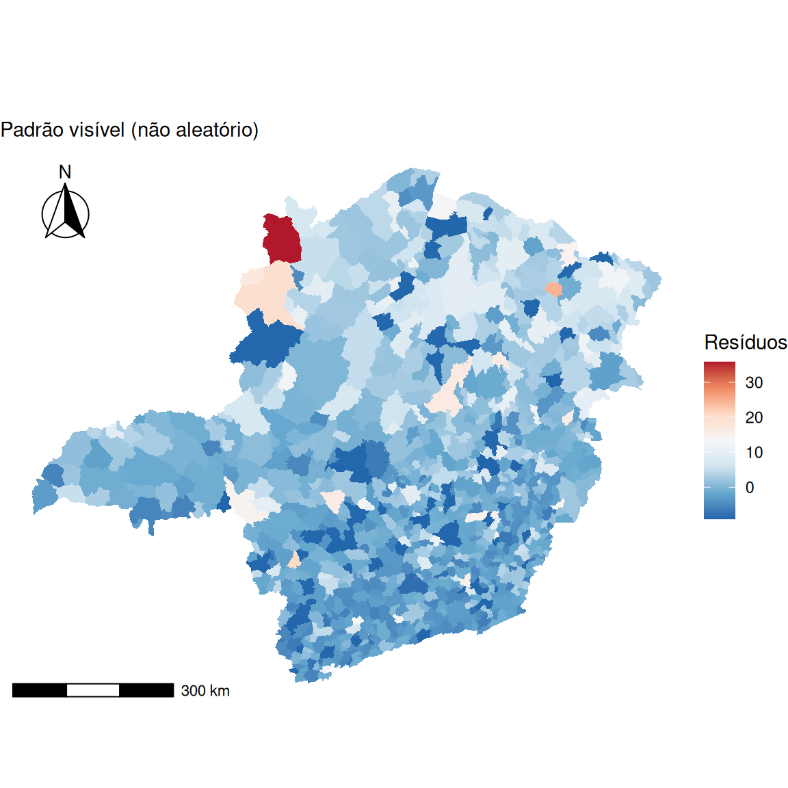
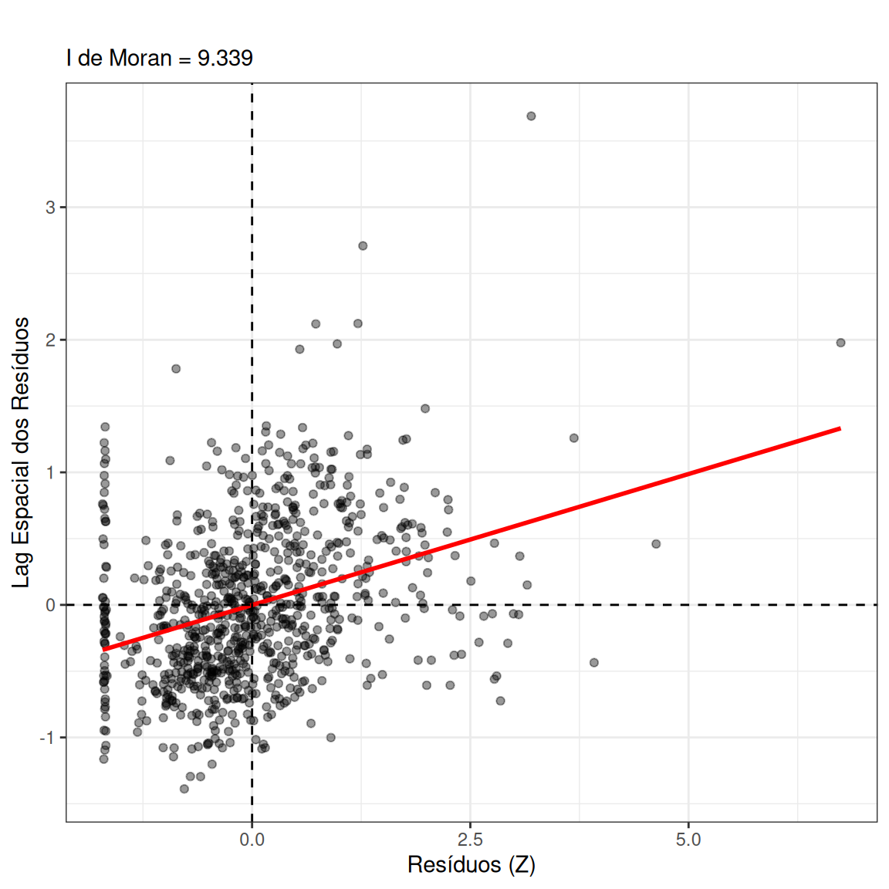
Segundo Cressie (1993), existem duas formas canônicas de especificar a dependência espacial em reticulados (lattice data):
Especificação Condicional (CAR):
Especificação Simultânea (SAR)
\(\Longrightarrow\) “Diga-me quem são teus vizinhos, e eu te direi quem és.”
\(Y_i = \mu_i + \sum_{j \neq i} w_{ij}(Y_j - \mu_j) + \epsilon_i,\)
\(\mathbb{E} [Y_i \mid \mathbf{Y}_{-i}] = \mu_i + \sum_{j \neq i} w_{ij}(Y_j - \mu_j)\)
Seja \(\mathbf{Y}_{-i} = \{Y_j : j \neq i\}\). O modelo é definido por uma família de distribuições condicionais Gaussianas:
\[ Y_i \mid \mathbf{Y}_{-i} \sim \mathcal{N}\left( \mu_i + \sum_{j \neq i} w_{ij}(Y_j - \mu_j),\, \sigma_i^2 \right) \]
\(\mu_i = \mathbf{x}_i^\top \boldsymbol{\beta}\).
\(w_{ij} \in W\): Pesos espaciais (interação vizinha).
\(\sigma_i^2\): Variância condicional (incerteza local).
\(\Longrightarrow\) Teorema de Hammersley-Clifford
Para que as condicionais locais formem uma distribuição conjunta válida \(\mathbf{Y} \sim \mathcal{N}_n(\boldsymbol{\mu}, \mathbf{\Sigma})\), a matriz de precisão \(\mathbf{Q} = \mathbf{\Sigma}^{-1}\) deve ser simétrica e positiva definida.
\(\mathbf{Y} \sim \mathcal{N}_n(\boldsymbol{\mu}, \mathbf{Q}_{CAR}^{-1}), \: \: \mathbf{Q}_{CAR} = \mathbf{M}^{-1} (\mathbf{I} - \rho \mathbf{W}), \: \: \mathbf{M} = \text{diag}(\sigma_1^2, \dots, \sigma_n^2)\)
Para que a matriz \(\mathbf{Q}\) seja simétrica, os pesos e as variâncias devem satisfazer:
\(\frac{w_{ij}}{\sigma_i^2} = \frac{w_{ji}}{\sigma_j^2}\)
Lembrando
Se \(w_{ij} \neq 0\), então \(i \sim j\) (são vizinhos). Os elementos da diagonal da precisão são \(Q_{ii} = 1/\sigma_i^2\). Os elementos fora da diagonal são \(Q_{ij} = -\rho w_{ij}/\sigma_i^2\).
O ICAR é um caso particular do modelo CAR onde a dependência espacial é máxima.
Ocorre quando \(\rho \to 1\).
Matriz de Precisão (\(\mathbf{Q}\)): Torna-se singular (não invertível) e semidefinida positiva com posto \(n-1\).
Atua como uma prior espacial que penaliza diferenças locais, suavizando o mapa sem definir um nível médio absoluto (o intercepto flutua livremente).
Amplamente utilizado em estatística Bayesiana (INLA, WinBUGS) como efeito aleatório estruturado (Besag; York; Mollié, 1991).
Como \(\rho \approx 1\), a média condicional depende apenas da média simples dos vizinhos.
\(Y_i \mid \mathbf{Y}_{-i} \sim \mathcal{N}\left( \bar{Y}_{\partial i},\, \frac{\sigma^2}{m_i} \right)\)
\(\mathbb{E}[Y_i \mid \mathbf{Y}_{-i}] = \frac{1}{m_i}\sum_{j \in \partial i} Y_j\)
\(\text{Var}[Y_i \mid \mathbf{Y}_{-i}] = \frac{\sigma^2}{m_i}\)
\(\mathbf{Q} = \sigma^{-2}(\mathbf{D} - \mathbf{W})\).
Como \(\mathbf{Q}\mathbf{1} = \mathbf{0}\), a distribuição é imprópria (não integra a 1).
A densidade depende apenas das diferenças entre pares (pairwise difference prior):
\(p(\mathbf{Y}) \propto \exp\left( -\frac{1}{2\sigma^2} \sum_{i \sim j} (Y_i - Y_j)^2 \right)\)
Para tornar o modelo identificável (obter uma distribuição própria), impõe-se uma restrição matemática:
\(\sum_{i=1}^n Y_i = 0 \quad (\text{Restrição de soma-zero})\)
Isso projeta os efeitos espaciais no subespaço ortogonal ao vetor constante \(\mathbf{1}\).
Garante unicidade e propriedades matemáticas bem definidas (Keefe; Ferreira; Franck, 2018).
O ICAR é frequentemente combinado com um efeito aleatório independente (ruído) para formar o modelo Besag-York-Mollié, separando o que é estrutura espacial do que é ruído puro.
Embore comum na estatística, vamos falar dele na seção de modelos econometricos.
\(\Longrightarrow\) Por que não usar (I)CAR/SAR direto em \(Y\)?
\(y_i \mid \theta_i \sim \text{Poisson}(E_i \theta_i)\)
2.GLM: Modelamos o logaritmo do risco (função de ligação canônica).
\(\eta_i = \log(\theta_i) = \mu + \mathbf{x}_i^\top \boldsymbol{\beta} + \varepsilon_i\)
Diferente da modelagem direta da resposta, aqui modelamos o preditor linear.
\[ \begin{align} \text{Observado:} & \quad y_i \sim \text{Poisson}(E_i e^{\eta_i}) \\ \text{Latente:} & \quad \eta_i = \underbrace{\mu + \mathbf{x}_i^\top \boldsymbol{\beta}}_{\text{Fixo}} + \underbrace{\varepsilon_i}_{\text{Aleatório}} \end{align} \]
A grande questão é: como estruturar \(\varepsilon_i\)?
Proposto por Besag; York; Mollié (1991), decompõe o erro em dois componentes aditivos:
\(\varepsilon_i = u_i + v_i\)
Prior: ICAR.
Captura dependência local (suavização).
Distribuição condicional aos vizinhos.
Prior: \(N(0, \tau_v^{-1})\).
Captura heterogeneidade pura (ruído)
Independente entre áreas.
Apesar de clássico, o BYM tem falhas graves apontadas por Riebler et al. (2016):
Identificabilidade: Apenas a soma \(\varepsilon = u+v\) é vista pelos dados. \(u\) e \(v\) competem pela explicação da variância.
A variância do componente espacial depende da geometria do grafo.
Consequência: A mesma prior \(\tau_u\) tem significados diferentes em mapas diferentes (ex: SP vs. Amazonas).
Riebler et al. (2016) resolvem o problema do modelo BYM escalonando a matriz (\(\mathbf{Q}_*\)) para que a variância geométrica média seja 1 e reparametrizando: \(\boldsymbol{\varepsilon} = \frac{1}{\sqrt{\tau}} \left( \sqrt{1 - \phi}\,\mathbf{v} + \sqrt{\phi}\,\mathbf{u}_* \right)\)
\(\tau\) (Precisão Marginal): Controla a variância total do efeito latente.
\(\phi \in [0, 1]\) (Peso Espacial): Proporção da variância explicada pela estrutura espacial.
A grande vantagem do BYM2 é a interpretação direta de \(\phi\): \(\text{Var}(\boldsymbol{\varepsilon}) = \underbrace{(1 - \phi)\sigma^2}_{\text{Ruído IID}} + \underbrace{\phi \sigma^2}_{\text{Espacial}}\)
\(\phi \to 1\): O fenômeno é puramente espacial (ICAR). O mapa é suave.
\(\phi \to 0\): O fenômeno é puramente ruído aleatório. O mapa é irregular.
\(\phi \approx 0.5\): Metade da variação vem dos vizinhos, metade é idiossincrasia local.
\(\Longrightarrow\) Qual o foco da análise?
Estatística Espacial (CAR/ICAR)
Suavização, predição e ajuste.
Condicional (\(Y_i \mid Y_{-i}\)).
Econometria Espacial
Foco: Causalidade, teste de hipóteses e impacto de políticas.
Mecanismo: Simultâneo (\(\mathbf{y} = (\mathbf{I} - \rho\mathbf{W})^{-1}\mathbf{X}\boldsymbol{\beta}\)).
Base Teórica: Interação estratégica, contágio, externalidades (Anselin, 1988).
Elhorst et al. (2014) define três canais de dependência:
Defasagem em Y (\(\mathbf{W}\mathbf{y}\)):
Endógena. O meu resultado depende do resultado do vizinho.
Ex: Competição fiscal, efeitos de pares, contágio de preços.
Defasagem em X (\(\mathbf{W}\mathbf{X}\))
Exógena. O meu resultado depende das características do vizinho.
Ex: Criminalidade local afetada pelo policiamento vizinho (deslocamento).
Defasagem no erro (\(\mathbf{W}\mathbf{u}\))
Residual. Choques não observados correlacionados.
Ex: Variáveis ambientais omitidas (poluição, clima) que afetam regiões vizinhas igualmente.
O Modelo Geral de Aninhamento Espacial (GNS - General Nesting Spatial Model) engloba todas as interações (Elhorst, 2022): \(\mathbf{y} = \rho \mathbf{W}\mathbf{y} + \mathbf{X}\boldsymbol{\beta} +\mathbf{W}\mathbf{X}\boldsymbol{\theta} + \mathbf{u}, \: \:\mathbf{u} = \lambda \mathbf{W}\mathbf{u} + \boldsymbol{\epsilon}\)
Componentes Principais
\(\rho \mathbf{W}\mathbf{y}\): Efeito de feedback simultâneo.
\(\mathbf{W}\mathbf{X}\boldsymbol{\theta}\): Efeito de transbordamento local (spillover).
\(\lambda \mathbf{W}\mathbf{u}\): Correlação nos erros não observados.
Parâmetros
\(\rho\): Intensidade do contágio endógeno.
\(\boldsymbol{\beta}\): Efeito direto das covariáveis.
\(\boldsymbol{\theta}\): Efeito indireto (vizinhos).
\(\lambda\): Intensidade da correlação residual.
Nota: A escolha do modelo é teórica. Você acredita em contágio real (\(\rho\)) ou apenas em variáveis omitidas (\(\lambda\))?
\(\Longrightarrow\) Modelo de Defasagem Espacial (Spatial Autoregressive Model: \(\rho \neq 0, \lambda = 0, \theta = 0\)
\[ Y_i = \rho \sum_{j=1}^n w_{ij} Y_j + \mathbf{x}_i^\top \boldsymbol{\beta} + \epsilon_i, \quad \epsilon_i \sim \mathcal{N}(0, \sigma^2) \]
Interpretação dos coeficientes
Efeito direto: Impacto da mudança em \(x_{ik}\) sobre \(y_i\).
Efeito indireto (Spillover): Impacto da mudança em \(x_{ik}\) sobre todos os outros \(y_j\).
Estimação
\(\Longrightarrow\) Modelo de erro espacial (Spatial Error Model: \(\lambda \neq 0, \rho = 0, \theta = 0\))
\[ y_i = \sum_{k=1}^K x_{ik}\beta_k + u_i, \qquad u_i = \lambda \sum_{j=1}^N w_{ij} u_j + \epsilon_i, \qquad \epsilon_i \sim \mathcal{N}(0, \sigma^2). \]
Interpretação dos coeficientes
\(\beta_k\) são os efeitos marginais diretos (Derivadas Parciais).
Uma variação em \(x_{ik}\) afeta apenas \(y_i\) (sem feedback ou spillovers na média).
Estimação
\(\Longrightarrow\) Modelo de defasagem espacial de X (Spatial Lag of X: \(\rho = 0, \lambda = 0, \boldsymbol{\theta} \neq \mathbf{0}\))
\[ y_i = \alpha + \sum_{k=1}^K x_{ik}\beta_k + \sum_{k=1}^K \theta_k \left( \sum_{j=1}^n w_{ij} x_{jk} \right) + \epsilon_i \]
Interpretação dos coeficientes
Efeito direto (\(\beta_k\)): Mudança em \(x_{ik}\) afeta \(y_i\).
Efeito indireto (\(\theta_k\)): Spillover local. Mudança em \(x_{jk}\) afeta \(y_i\).
Estimação e Vantagens
\(\Longrightarrow\) Modelo Espacial de Durbin (Spatial Durbin Model: \(\lambda = 0, \rho \neq 0, \boldsymbol{\theta} \neq \mathbf{0}\))
\[ y_i = \rho \sum_{j=1}^n w_{ij} y_j + \sum_{k=1}^K x_{ik}\beta_k + \sum_{k=1}^K \theta_k \left( \sum_{j=1}^n w_{ij} x_{jk} \right) + \epsilon_i \]
Decomposição de impactos
Efeito direto: Impacto de \(x_{ik}\) em \(y_i\) (com feedback).
Efeito indireto: Impacto de \(x_{ik}\) em todos os outros \(y_j\).
Estimação
\(\Longrightarrow\) Modelo Espacial de Durbin com Erro (Spatial Durbin Error Model: \(\rho = 0, \lambda \neq 0, \boldsymbol{\theta} \neq \mathbf{0}\))
\[ y_i = \sum_{k=1}^K x_{ik}\beta_k + \sum_{k=1}^K \theta_k \left( \sum_{j=1}^n w_{ij} x_{jk} \right) + u_i, \quad u_i = \lambda \sum_{j=1}^n w_{ij} u_j + \epsilon_i. \]
Interpretação dos coeficientes
Efeito direto (\(\beta_k\)): Impacto de \(x_{ik}\) em \(y_i\). Idêntico à regressão clássica.
Efeito indireto (\(\theta_k\)): Impacto de \(x_{jk}\) em \(y_i\). Se \(w_{ij}=0\), o efeito é nulo.
Estimação
\(\Longrightarrow\) Modelo Autorregressivo Espacial com Erros Autorregressivos (Spatial Combined: \(\rho \neq 0, \lambda \neq 0, \boldsymbol{\theta} = \mathbf{0}\))
\[ y_i = \rho \sum_{j=1}^n w_{1,ij} y_j + \sum_{k=1}^K x_{ik}\beta_k + u_i, \quad u_i = \lambda \sum_{j=1}^n w_{2,ij} u_j + \epsilon_i. \]
Interpretação dos coeficientes
Segue a lógica do SAR: \(\mathbb{E}[\mathbf{y}] = (\mathbf{I}_n - \rho \mathbf{W}_1)^{-1}\mathbf{X}\boldsymbol{\beta}\).
Requer decomposição em efeitos diretos, indiretos e totais.
Estimação
\(\Longrightarrow\) Modelo de Média Móvel Espacial (Spatial Moving Average)
\[ y_i = \sum_{k=1}^K x_{ik}\beta_k + \epsilon_i + \lambda \sum_{j=1}^n w_{ij} \epsilon_j, \quad \epsilon_i \sim \mathcal{N}(0, \sigma^2) \]
Interpretação da Covariância
A estrutura de covariância é finita: \(\boldsymbol{\Omega} = \sigma^2 (\mathbf{I}_n + \lambda \mathbf{W})(\mathbf{I}_n + \lambda \mathbf{W})^{\top}\).
A correlação é nula para unidades que não sejam vizinhas diretas nem compartilhem um vizinho comum.
Decaimento abrupto da correlação espacial (ao contrário do SEM).
Estimação
\(\Longrightarrow\) Variável dependente binária (\(y_i \in \{0, 1\}\)) com dependência espacial.
\[ y_i^* = \rho \sum_{j=1}^n w_{ij} y_j^* + \mathbf{x}_i^{\top}\boldsymbol{\beta} + \epsilon_i, \: \epsilon_i \sim \mathcal{N}(0, 1) \Rightarrow y_i = \begin{cases} 1, & \text{se } y_i^* > 0 \\ 0, & \text{se } y_i^* \le 0 \end{cases} \]
Bayesiana (MCMC): Trata \(y^*\) como parâmetro latente e amostra sequencialmente de uma normal truncada (LeSage, 2000).
GMM
Interpretação
Use os efeitos médios diretos, indiretos e totais calculados via simulação ou MCMC (LeSage; Pace, 2009).
\(\Longrightarrow\) Variável dependente categórica ordenada (ex: Nível de satisfação: Baixo < Médio < Alto).
\[ y_i = j \quad \iff \quad \gamma_j < y_i^* \le \gamma_{j+1}, \: y_i \in \{0, \dots, J\}\\ \Downarrow\\ \mathbf{y}^* = \rho \mathbf{W}\mathbf{y}^* + \mathbf{X}\boldsymbol{\beta} + \boldsymbol{\epsilon}, \quad \boldsymbol{\epsilon} \sim \mathcal{N}(\mathbf{0}, \mathbf{I}_n) \]
Deve-se reportar para CADA categoria \(j\):
Efeito direto: Impacto médio na própria unidade.
Efeito indireto: Impacto médio nos vizinhos.
Efeito total: Soma dos dois.
\(\Longrightarrow\) Variável contínua censurada (ex: muitos zeros e cauda contínua).
\[ y_i^* = \rho \sum_{j=1}^n w_{ij} y_j^* + \mathbf{x}_i^{\top}\boldsymbol{\beta} + \epsilon_i, \quad \epsilon_i \sim \mathcal{N}(0, \sigma^2)\\ \Downarrow\\ y_i = \max(0, y_i^*) \]
Bayesiana (MCMC)
EM (Expectation-Maximization): Imputa valores esperados para os dados censurados e maximiza a verossimilhança (McMillen, 1992).
Interpretação
Efeito direto: Impacto de \(x_{ik}\) em \(y_i\) (considerando a probabilidade de \(y_i > 0\)).
Efeito indireto: Spillover espacial.
\(\Longrightarrow\) A chave é o parâmetro de defasagem espacial em \(Y\) (\(\rho\)).
Sem feedback global (\(\rho = 0\)):
\(\frac{\partial y_i}{\partial x_{ik}} = \beta_k\). O que acontece no vizinho fica no vizinho.
Ação: Interprete os \(\beta\) e \(\theta\) diretamente da tabela (summary()).
Com Feedback Global (\(\rho \neq 0\)):
\(\frac{\partial \mathbf{y}}{\partial \mathbf{x}_k} = (\mathbf{I} - \rho \mathbf{W})^{-1} \beta_k\). O \(\beta\) estimado é apenas o impulso inicial, não o resultado final.
Ação: Ignore o summary(). Calcule os Efeitos diretos, indiretos e totais (função impacts()).
| Critério | Modelos Locais (OLS, SEM, SLX, SDEM) |
Modelos Globais (SAR, SDM, SAC) |
|---|---|---|
| Parâmetro \(\rho\) | \(\rho = 0\) (Ausente) | \(\rho \neq 0\) (Presente) |
| Mecanismo | Transmissão direta | Multiplicador \((\mathbf{I} - \rho \mathbf{W})^{-1}\) |
| Feedback | Finito (\(i \to j\)) | Infinito (\(i \leftrightarrow j \leftrightarrow \dots\)) |
| Interpretação | Direto do summary() |
Obrigatório impacts() |
| Coeficiente \(\beta\) | É o Efeito Direto | Impulso inicial (Pré-feedback) |
| Coeficiente \(\theta\) | É o Spillover | Compõe o cálculo total |
| No R | coef(modelo) |
impacts(modelo) |
\(\Longrightarrow\) A falácia da média espacial.
Modelos globais (OLS, SAR, SEM) assumem estacionariedade espacial: a relação entre \(Y\) e \(X\) é constante em todo o mapa (\(\boldsymbol{\beta}\) fixo).
Exemplo: Um modelo global assume que o preço por \(m^2\) da área construída é o mesmo na periferia e em bairros nobres.
Realidade: Existe um valor intrínseco de localização:
Bairros nobres: \(\beta_{area}\) alto.
Periferia: \(\beta_{area}\) baixo.
Modelos globais aplicados a processos heterogêneos produzem estimativas médias enganosas, mascarando variações locais. (Lu et al., 2014)
\(\Longrightarrow\) Decomposição de parâmetros.
Modelos locais (GWR, MGWR) permitem que os parâmetros flutuem no espaço \((u_i, v_i)\).
\[ y_i = \beta_0(u_i, v_i) + \sum_{k=1}^{p} \beta_k(u_i, v_i) x_{ik} + \epsilon_i \]
\(\Longrightarrow\) Regressão Geograficamente Ponderada
\[ y_i = \beta_0(u_i, v_i) + \sum_{k=1}^{p} \beta_k(u_i, v_i) x_{ik} + \epsilon_i\: \Longrightarrow \hat{\boldsymbol{\beta}}(u_i, v_i) = \left( \mathbf{X}^\top \mathbf{W}(i) \mathbf{X} \right)^{-1} \mathbf{X}^\top \mathbf{W}(i) \mathbf{y} \]
\[ \mathbf{W}(i) = \text{diag}\left(w_{i1}, w_{i2}, \dots, w_{in}\right) = \begin{bmatrix} w_{i1} & 0 & \cdots & 0 \\ 0 & w_{i2} & \cdots & 0 \\ \vdots & \vdots & \ddots & \vdots \\ 0 & 0 & \cdots & w_{in} \end{bmatrix}_{n \times n}, \]
\(w_{ij}\): Peso da observação \(j\) na calibração do ponto \(i\). Decai com a distância \(d_{ij}\).
A forma como \(w_{ij}\) decai é crucial.
Fixo: \(b\) constante (raio fixo). Ruim para dados com densidade variável.
Adaptativo: \(b\) definido por \(N\) vizinhos mais próximos. Ajusta-se à densidade dos dados (Guo; Ma; Zhang, 2008).
Trade-off:
\(b\) pequeno \(\to\) Alta variância (overfitting).
\(b\) grande \(\to\) Alto viés (tende ao OLS global).
Seleção de \(b\) (AICc)
Busca-se o \(b\) que minimiza o AIC corrigido. O
A Limitação da GWR: Assume um único \(b\) para todas as covariáveis. Força o modelo a assumir que o “Clima” (global) varia na mesma escala que a “Renda” (local).
A Solução MGWR: Permite uma largura de banda \(bw_j\) específica para cada covariável \(j\).
\[ y_i = \beta_0(u_i, v_i; bw_0) + \sum_{j=1}^{p} \beta_j(u_i, v_i; bw_j) \, x_{ij} + \epsilon_i \]
Não existe solução analítica direta (como no WLS da GWR).
Usa-se um processo iterativo inspirado em GAMs (Modelos Aditivos Generalizados) (Yu et al., 2020).
Começa com estimativas OLS ou GWR padrão.
Para cada variável \(j\):
Calcula o resíduo parcial (\(\mathbf{r}_j\)): Remove o efeito estimado de todas as outras variáveis.
Ajusta uma GWR univariada de \(\mathbf{r}_j\) contra \(\mathbf{x}_j\).
Encontra o \(bw_j\) ótimo (via AICc) para esta variável específica.
Repete até que os coeficientes estabilizem.
\(bw_j\) Pequeno (Local): Processo altamente heterogêneo.
\(bw_j\) Grande (Global): Processo estacionário.
A MGWR produz modelos mais parcimoniosos (menor AICc) e reduz problemas de multicolinearidade local ao não forçar variáveis globais a variarem localmente (Oshan; Smith; Fotheringham, 2020).
Na Aula 06, veremos a parte prática deste conteúdo. Por favor, leia todo o Capítulo 4, com foco na aplicação e pacotes.